Il campo strutturale:
lo spazio come sistema di relazioni interdipendenti
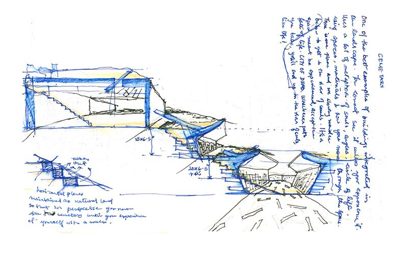
Lo spazio non è un contenitore, ma un campo di forze. Ogni elemento entra in relazione con gli altri, partecipa a un equilibrio complesso fatto di direzioni, polarità, tensioni. La forma non è un volume isolato, ma l’emergere di una struttura condivisa. I progetti scelti mostrano come l’architettura nasca dalla costruzione coerente di un campo interdipendente.
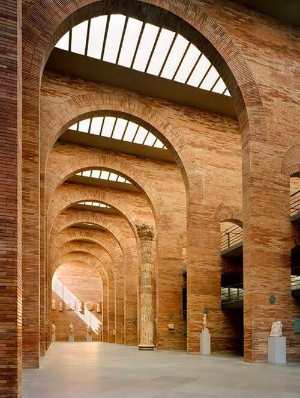
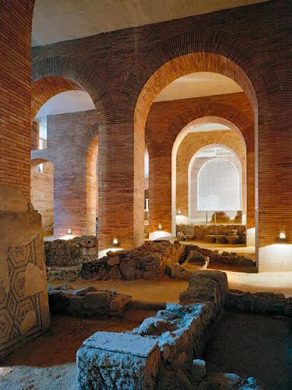
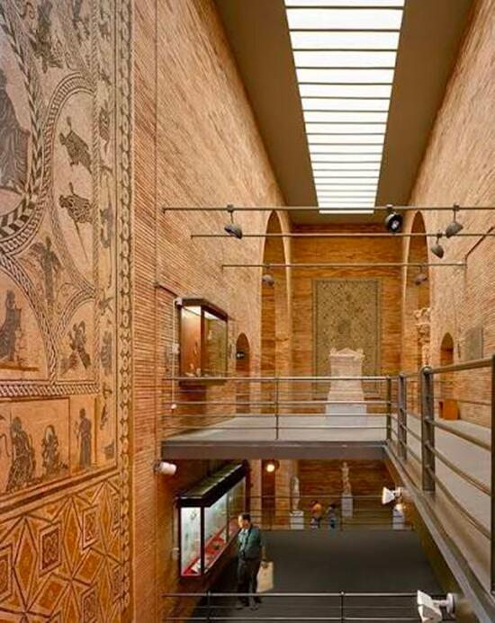

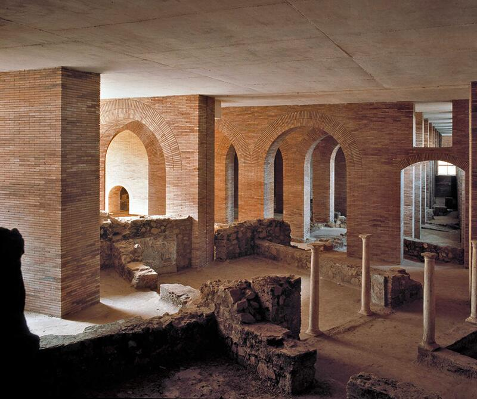
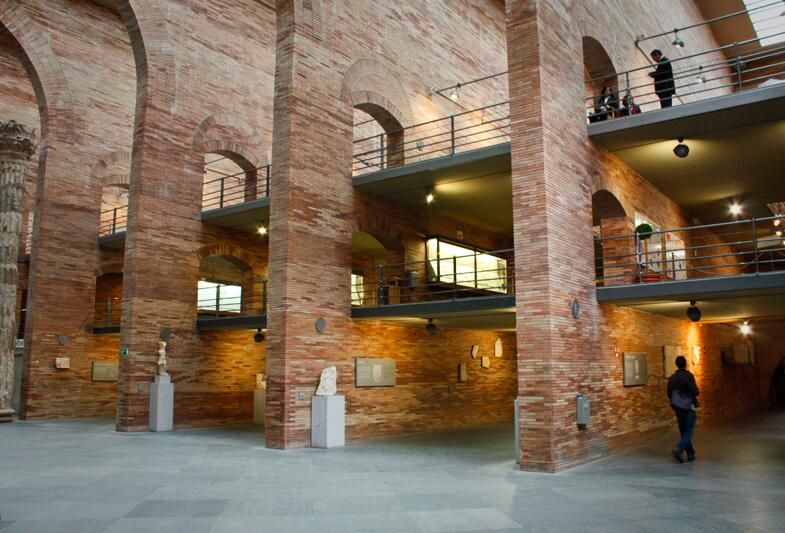
- le grandi pareti in laterizio generano assi longitudinali potentissimi,
- le campate ripetute costruiscono ritmo e profondità,
- la luce zenitale allinea verticalità e movimento,
- il vuoto centrale tiene insieme l’intero sistema.
L’interno del Museo Romano di Mérida è costruito come un campo spaziale unitario: una grande navata a doppia altezza, scandita da pareti longitudinali in laterizio e da una sequenza di archi ripetuti. Questa serialità non ha valore decorativo: organizza la direzione dello spazio, orienta lo sguardo e dà al corpo un chiaro vettore di percorrenza. Il ritmo delle campate costruisce profondità e proporzione, trasformando la navata in un sistema percettivo coerente.
La luce naturale, filtrata da aperture alte e sottili, non illumina semplicemente le opere: definisce il comportamento del vuoto, accentua la verticalità, crea gradienti di intensità che guidano la percezione. La luce diventa una vera struttura interna, capace di stabilire gerarchie e di restituire monumentalità ai reperti.
Un secondo livello museale integra le preesistenze archeologiche in situ. Non come reperti isolati, ma come parte del campo spaziale stesso: variazioni di quota, aperture, affacci rendono i resti romani un elemento che “agisce” nell’architettura contemporanea, mettendo in relazione passato e presente in un’unica continuità.
L’uso del mattone, che avvolge la struttura in cemento, non è citazione storicista: è coerenza materica e costruttiva, un modo per radicare il museo nella tradizione romana reinterpretandola in chiave contemporanea.
Il Museo di Mérida dimostra che la monumentalità non è un fatto formale, ma nasce dalla forza della struttura percettiva: direzione, luce, ritmo, materia e archeologia concorrono a costruire un campo unitario, uno spazio che non espone la storia, ma la fa vivere attraverso la sua struttura.
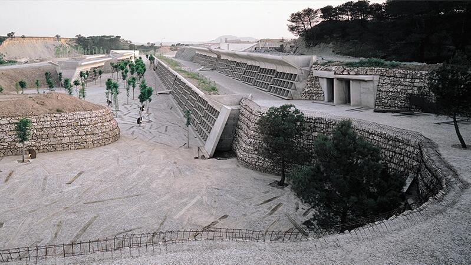
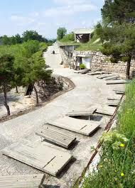
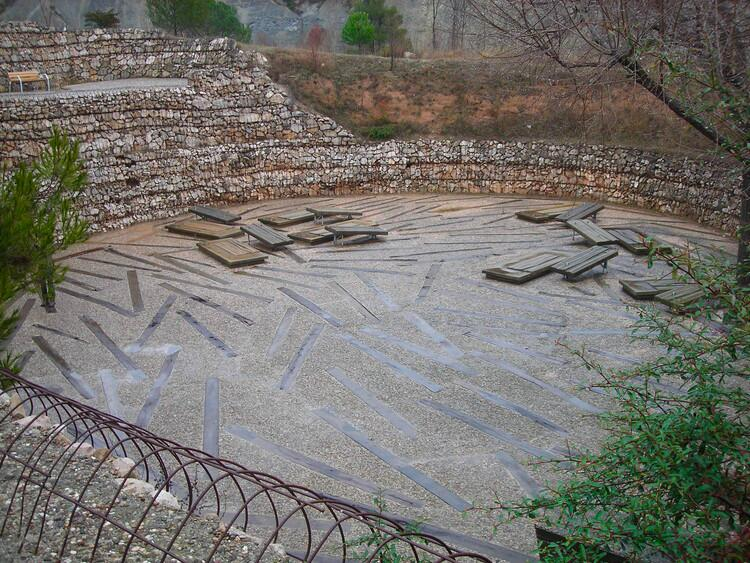
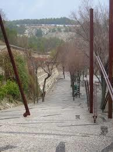
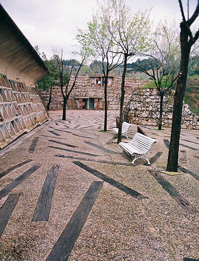
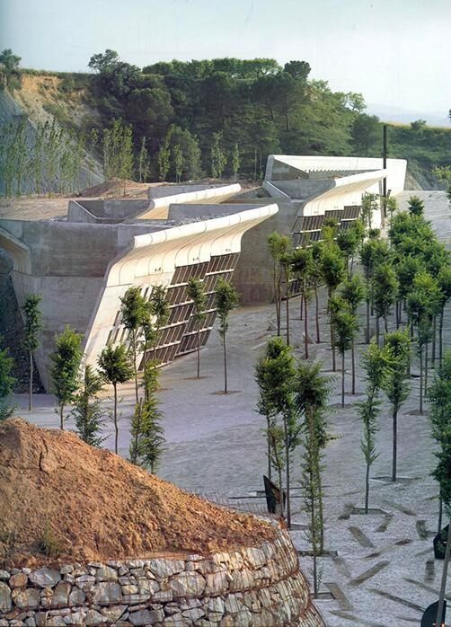
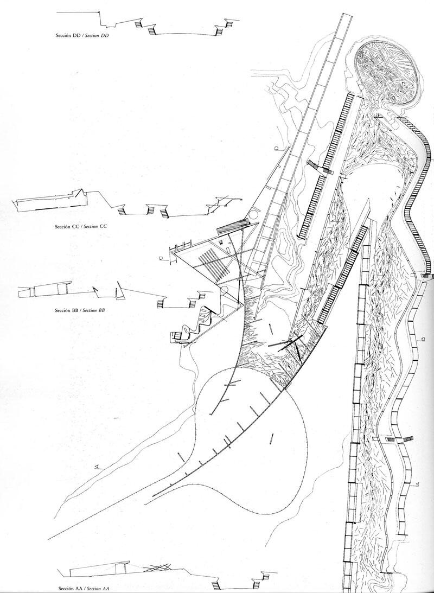
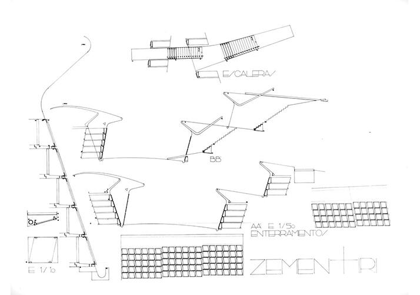

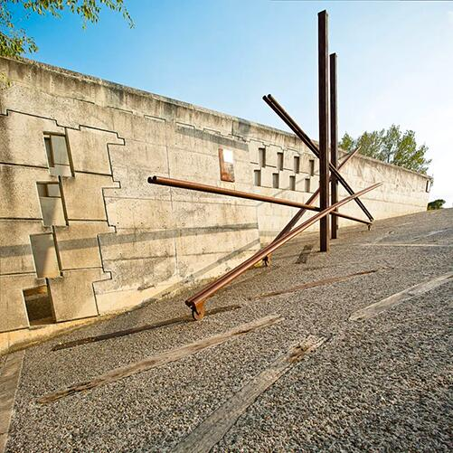
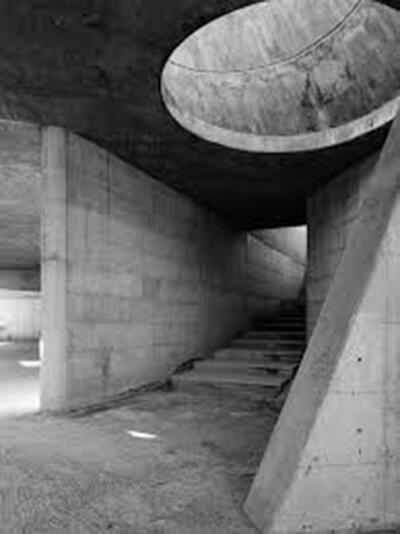
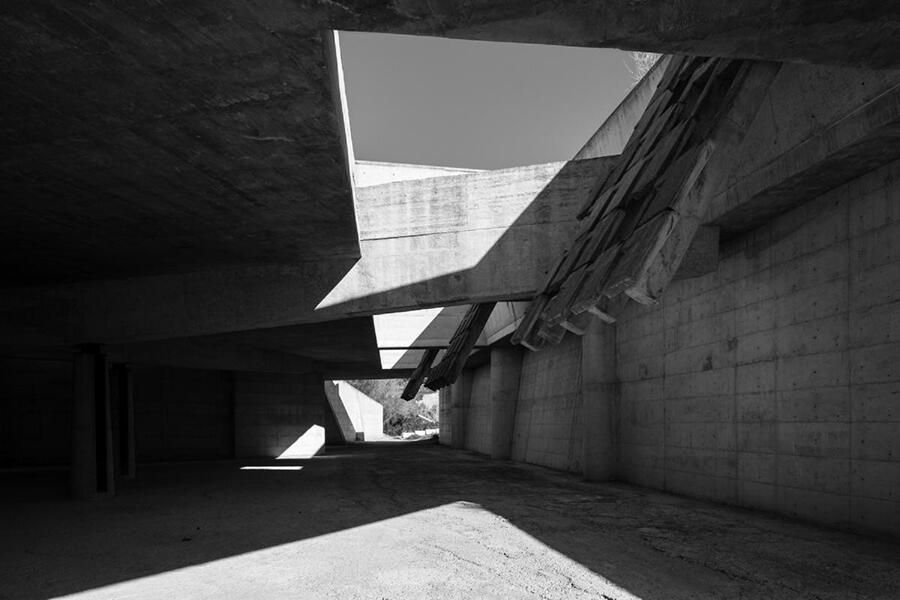
- il percorso in trincea definisce una direzione vettoriale forte,
- i muri inclinati producono tensioni contrapposte,
- il terreno scolpito diventa materia strutturale,
- luce, suolo e geometria si legano in una relazione interdipendente.
Il percorso come struttura percettiva: lo spazio che nasce dal suolo
Nel Cimitero di Igualada il percorso diventa il vero principio generatore dello spazio. Miralles e Pinós non progettano un cimitero come insieme di oggetti, ma come architettura di suolo, un taglio scavato nella terra che guida il corpo attraverso una discesa lenta, processionale. Il sentiero, sinuoso e inciso nella topografia, è una struttura di percezione: organizza direzioni, compressioni e aperture, modulando il tempo dell’esperienza.
L’architettura non si impone sul paesaggio: si inscrive in esso. Muri inclinati, tagli obliqui, quote che si abbassano e si rialzano costruiscono un campo dinamico in cui ogni elemento risponde alle forze del terreno. La geometria spezzata non è irregolarità formale: è la traduzione spaziale della topografia e del movimento, una sintassi che nasce dal luogo stesso.
La matericità — cemento grezzo, pietra, travi di legno invecchiate — radica il percorso nel ciclo naturale del tempo. L’invecchiamento dei materiali, voluto, fa parte dell’opera: restituisce allo spazio il senso della trasformazione, della finitudine, della continuità tra vita e morte.
La luce, filtrata tra le pareti e riflessa sulle superfici ruvide, non illumina come in un edificio tradizionale: rivela le soglie, marca passaggi, accentua la profondità della trincea o l’apertura improvvisa del cortile finale. È una luce che guida, che misura, che accompagna il cammino più che mettere in risalto forme.
Il risultato è un’opera in cui percorso, suolo, luce e materia sono inseparabili. Lo spazio non si comprende da un punto di vista esterno: si comprende camminando, perché è il movimento a svelarne la struttura. Igualada è uno dei casi più radicali della fine del Novecento in cui il progetto non costruisce un oggetto, ma un campo percettivo — una narrazione silenziosa in cui il paesaggio diventa architettura e l’architettura diventa esperienza del tempo.
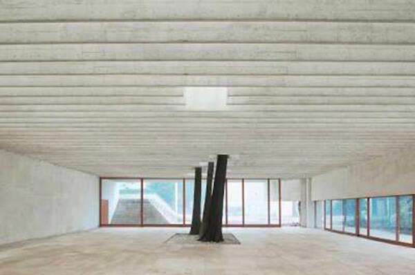

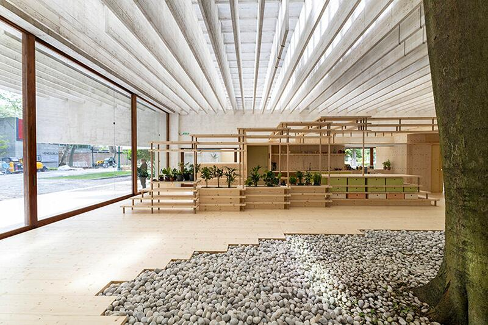
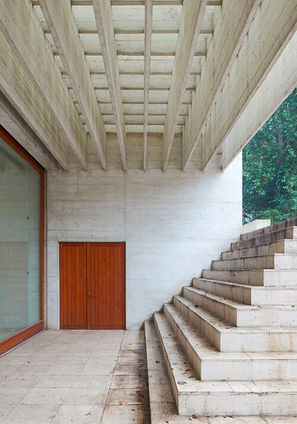
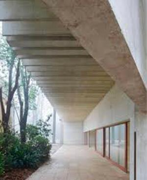
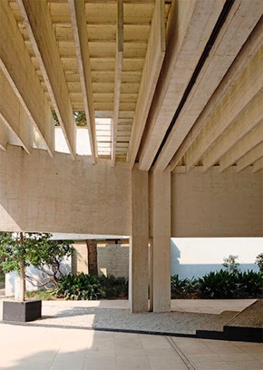
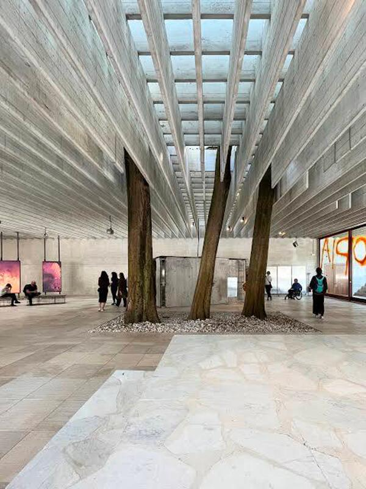
- la griglia di travi in calcestruzzo definisce un campo strutturale continuo,
- gli alberi che attraversano la copertura introducono poli verticali naturali,
- luce e ombra si intrecciano come materia dello spazio,
- le superfici leggere non chiudono, ma organizzano il vuoto.
Una massa sospesa come dispositivo percettivo
La struttura come filtro: un campo luminoso che scioglie il confine tra interno ed esterno
Nel Padiglione Nordico di Venezia, Fehn non costruisce un interno protetto né un padiglione chiuso: costruisce un luogo intermedio, uno spazio percettivo in cui luce, natura e struttura collaborano come parti di un unico campo. La grande griglia di travi sottili in cemento non definisce un volume, ma un filtro: lascia passare la luce, la modula, la diffonde. La copertura diventa così un dispositivo atmosferico che genera una luce omogenea, “senza ombre”, capace di trasformare il vuoto in materia sensibile.
Il gesto più radicale è l’inclusione dei platani preesistenti, che attraversano la copertura e si ergono come colonne viventi. Essi introducono tempo, umidità, stagioni, movimento dell’aria: elementi che dissolvono la distinzione tra architettura e paesaggio. Lo spazio non è più interno né esterno, ma una soglia continua, un ambiente poroso dove la natura diventa parte attiva della struttura.
Le pareti leggere e l’apertura su due lati definiscono uno spazio attraversabile, in cui lo sguardo e il corpo sono liberi di orientarsi senza gerarchie imposte. La materialità — cemento bianco, sabbia chiara, marmo frantumato — potenzia la luminosità diffusa e costruisce un’atmosfera silenziosa, essenziale, profondamente nordica.
Ciò che rende il padiglione un riferimento centrale per la Lezione 4 è il suo modo di intendere lo spazio come campo percettivo: un sistema in cui struttura, luce e natura non sono elementi separati, ma relazioni che si sostengono a vicenda. L’architettura non rappresenta il paesaggio: lo lascia accadere. Non costruisce un volume: costruisce le condizioni per percepire la luce, il vuoto, il passare delle ore. Il Padiglione Nordico è quindi un manifesto della modernità silenziosa di Fehn: un’architettura che rinuncia alla forma come oggetto e afferma la forma come relazione. Un luogo fragile e potentissimo, in cui l’esperienza percettiva non è un effetto ma la vera struttura dello spazio.